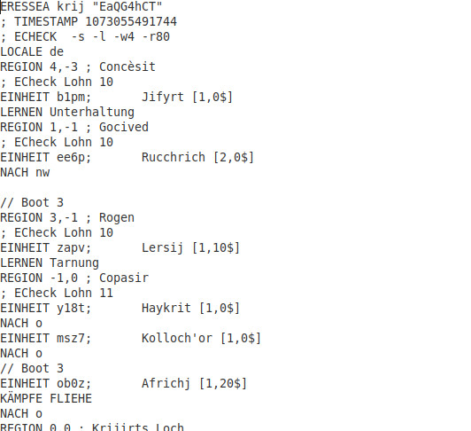

Einleitung

In Eressea übernimmst du eine Partei von Personen einer bestimmten Rasse, die du dir bei der Anmeldung aussuchen kannst. Du wirst dann mit einigen anderen gemeinsam in der Welt von Eressea ausgesetzt und kannst von dort aus mit der Erforschung der Umgebung und der ganzen Welt beginnen.

Eressea ist eine fantastische Welt. Wesen wie Elfen und Zwerge bevölkern die Welt, und Magie gehört zum täglichen Geschehen. Sogar Drachen wurden schon gesichtet, große, mächtige und vor allem gefährliche Monster, die zu bekämpfen einige Hundertschaften von Soldaten benötigt, ebenso Seeschlangen, Ents und andere seltsame Kreaturen.
Eressea ist eine große Welt. Hunderte von Völkern leben auf den Inseln Eresseas und viele von ihnen werden sich wohl niemals begegnen, denn es kann Jahre dauern, die Entfernungen zu überbrücken.
Eressea ist eine komplexe Welt. Ein Volk zu führen ist keine leichte Aufgabe. Vieles gilt es zu berücksichtigen, damit alles klappt und die Nachbarn mischen auch noch mit. Absprachen müssen getroffen werden, vielleicht kommt es zu Streitereien, gar zum Krieg. Und auch, wenn alles gut geht, beansprucht Eressea viel Zeit. Während man anfänglich kaum eine Stunde pro Woche braucht, kann das später auf zehn und mehr Stunden pro Woche anwachsen.

Es gibt kein eindeutiges Spielziel in Eressea, kein Ende, welches es zu erreichen gilt. Du kannst dir selbst "Etappenziele" setzen, die du erreichen möchtest, sei es der Aufbau eines Handelsimperiums, das Erobern einer kompletten Insel, das Erforschen möglichst vieler Regionen oder was auch immer. Was auch immer es ist, es wird Auswirkungen auf die Welt haben, die du beschreiben kannst und deren Geschicke du mitbestimmst.
Wie das Spiel funktioniert

In Eressea sendest du in regelmäßigen Abständen einen Zug ein. Ein Zug besteht aus Befehlen, die die Einheiten deiner Partei in der Welt so gut wie möglich auszuführen. Ein Zug ähnelt einem Computerprogramm, damit der Server, das Computerprogramm, das den Zustand der Welt kennt, ihn und die Züge aller anderen Spielenden auswerten und den neuen Zustand der Welt berechnen kann. Der Zugrhythmus liegt bei einer Woche, ZAT (Zug-Abgabe-Termin) ist jeweils Samstag Abend 21:00 Uhr (CET). Als Antwort auf deinen Zug bekommst du einen Report, der den Zustand der Welt enthält, soweit er deiner Partei bekannt ist. Die Auswertung besteht aus mehreren Teilen: Einem NR (Normalreport), der den Report in einer für Menschen gut lesbaren Form darstellt. Einem CR (Computerreport), der die gleichen Informationen, aber in einer computerlesbaren Form darstellt, mit der Hilfsprogramme gut zurechtkommen. Und einer Zugvorlage, die als Schablone für deinen nächsten Zug dienen kann. Außerdem kann es noch einen Wochenbericht geben, der ein paar Statistiken über den Zustand des Spiels enthält. Und manchmal den Xontormia Express, eine Zeitung, die Beiträge von Spielenden aus Sicht der Spielwelt enthält.
Kam bei der Spielleitung kein Zug an, so gibt das einen so genanten NMR (No Move Received). Bei 4 NMR in Folge wird die Partei automatisch aus dem Spiel genommen, also wird beim 5. NMR die Partei gelöscht.
|--------------|--------| | Weiterlesen: | Welt |